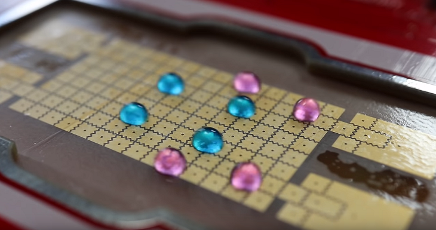

OpenDrop

OpenDrop, now in its third version, is an open source digital microfludics platform based off electrowetting technologies, that can confine and move droplets of liquid. The device is made by GaudiLabs, the source of Generic Lab Equipment. The platforms best first impression is probably this software demonstration video:
OpenDrop is open source, which means a github webpage hosts the software (written for Arduino), as well as various svg and pdf files that serve to layout the hardware. This is not a particularly approachable DIY project, the resources to build it are rather bare bones. Though a series of youtube videos do explain some subtleties in the platform. Despite it's lack of user-friendly tutorials, it has served as the starting point for several microfluidic projects.
If you don't want to build one, GaudiLabs sells the V3 device for just under $800.